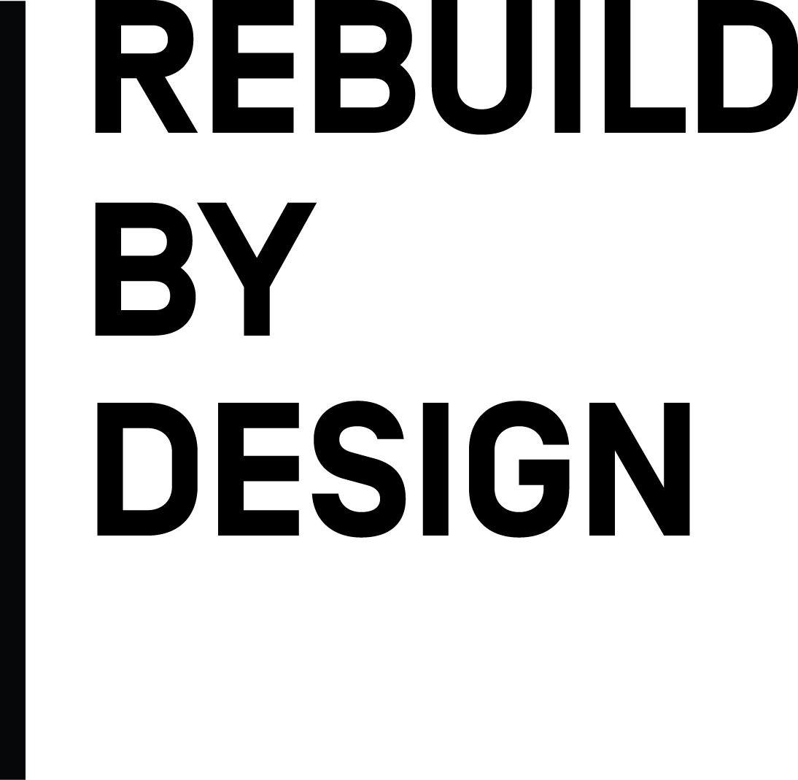

Rebuild by Design analyzed 3.4 million properties across New Jersey to map where flood risk puts people, budgets, and critical public assets at greatest risk. Without government intervention, flood-prone residents face displacement and some with limited resources while municipalities lose the tax base that funds schools, roads, and everyday services.
Click to view different displacement risk groups. Each property is classified by flood exposure and financial capacity.
Search any New Jersey address to zoom to that location.
Click any county to see how many residents face displacement and which critical public assets are in the floodplain today and by 2050.
NJ's Blue Acres program buys flood-prone homes and returns the land to nature.

By 2050, nearly 1.3 million New Jerseyans face displacement — half are lower-income residents with limited means to relocate.
For more details on data sources and methodology, visit the NJ Flood Risk = Financial Risk report by Rebuild by Design.